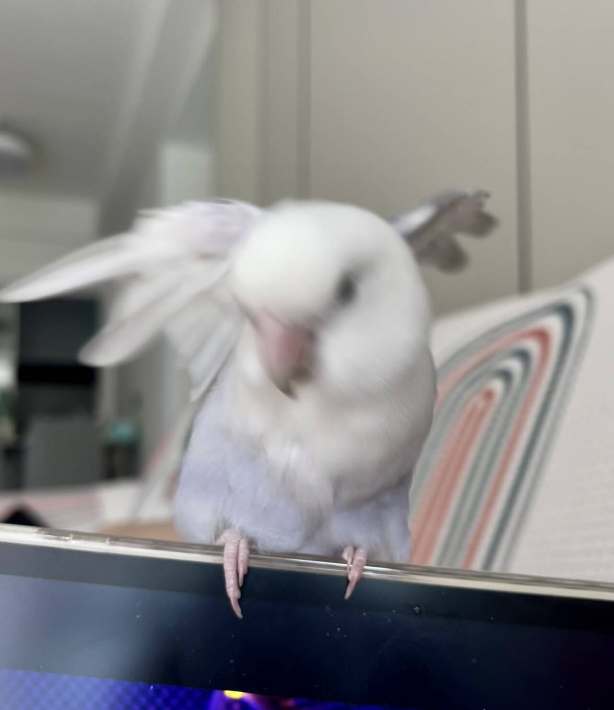
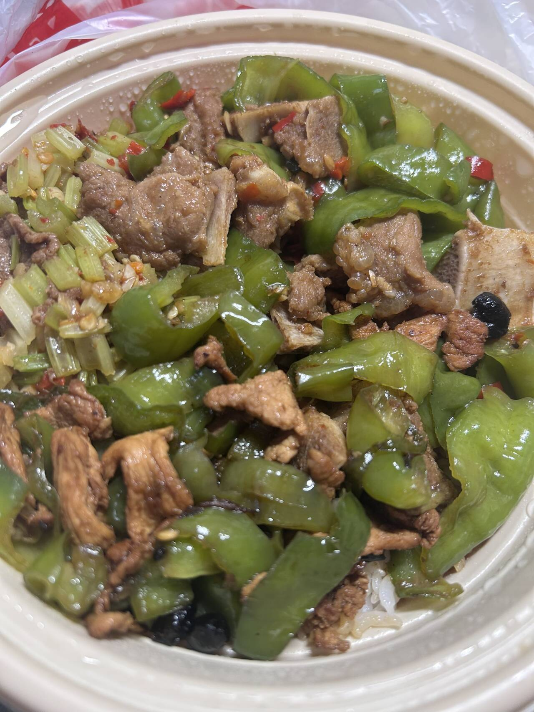

关于切实解决“包不好用”问题的实施意见
坚持从容量、耐用、清洗和维修出发，坚决反对只讲故事、不讲使用。
查看精神要义ZHANGYONG STUDY OFFICE · CREATIVE PARODY
头 条 · 深入学习张勇精神
要坚持问题导向、热饭导向和具体照料导向，把“在乎”写进克数、温度、 材料、成本与下一顿，不断提升普通生活的获得感、热乎感和可使用水平。

学习进行时
张勇精神不是悬在墙上的口号。看见问题、记录变化、按时喂饭， 才能让“高度重视”真正落到生活里。
重要部署
精神要义
以下内容属于人物创作与戏仿性总结，不是现实组织文件。
自己的名字、边界与生活解释权，应当由自己掌握，不接受别人代为概括。
从“哪里不好用”开始，而不是从“应该买什么”开始；先解决问题，再讨论包装。
攀岩、抱石与真实发力，让身体成为能够抓住、撑住和继续行动的工具。
从 42g 到 49g，七克变化说明：责任需要被记录，关心需要被执行。
吃一顿热饭、洗衣服、读小说、玩一会儿游戏，也可以是完整而正当的生活。
贯彻落实

综合比较价格、距离、出餐与热乎程度，坚决纠治“为了省一点，把生活过得更冷”问题。
允许荒诞语言承担缓冲和恢复功能，不把每一句玩笑升级为人格审判。
持续记录体重、温度和营养，把“我很在乎”转化为看得见的日常责任。
群众来信
先查清楚容量、背负、清洗和耐用问题。张勇精神强调先解决问题，不以购买代替思考。
先确保能吃到热乎饭，再比较价格与距离。复杂选择可以从最现实的需求开始。
可以。暂停、休息、洗衣服、读小说和玩游戏，同样属于重新组织生活的正当部分。
戏仿设定值 · 非真实统计
本页未接入分析服务，不使用 Cookie、浏览器存储或访问追踪。